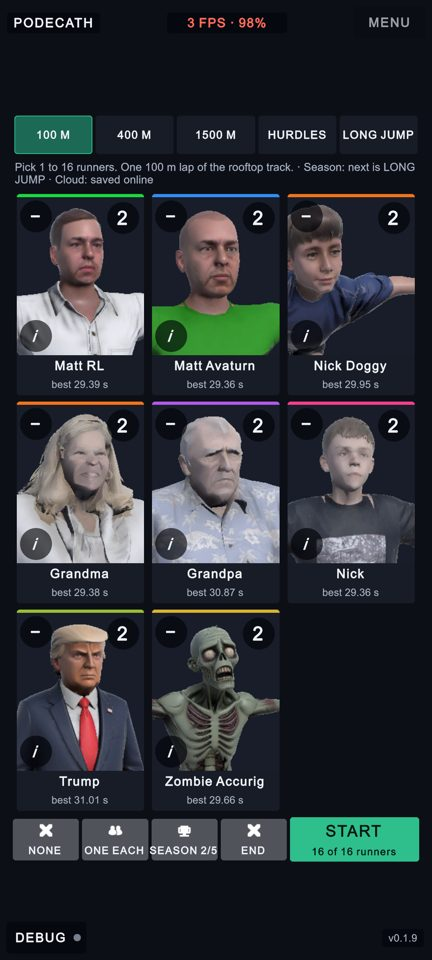
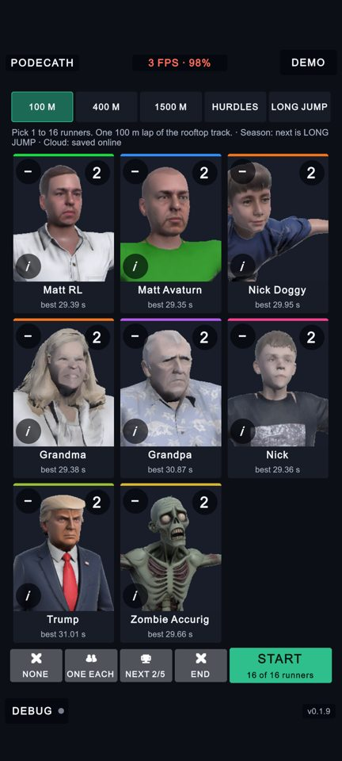
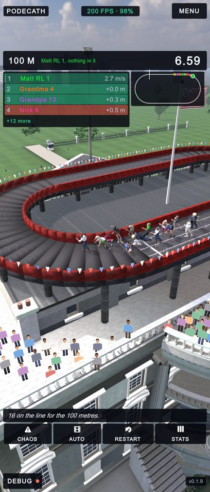
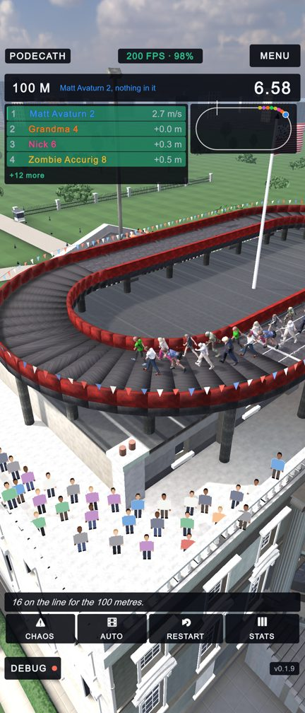
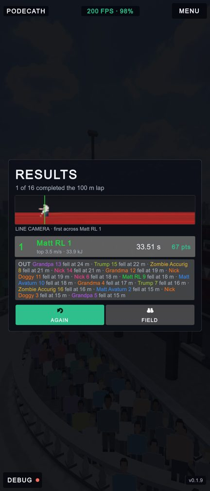
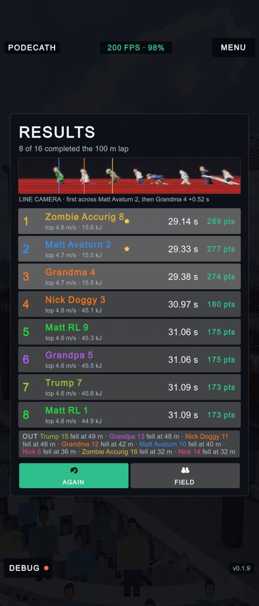
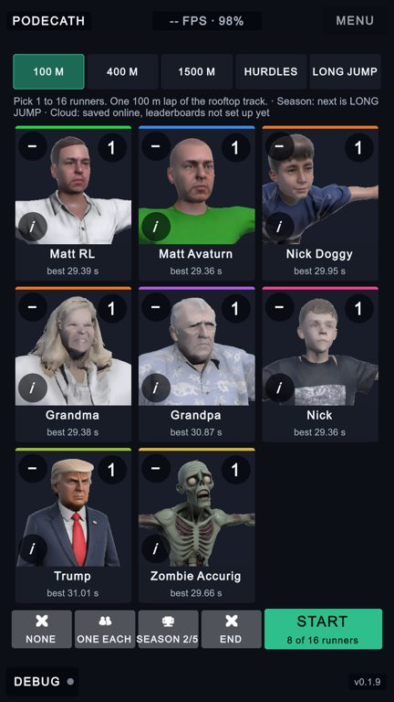
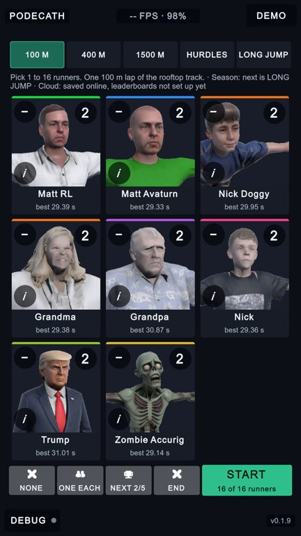
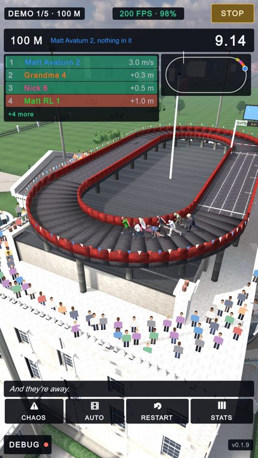
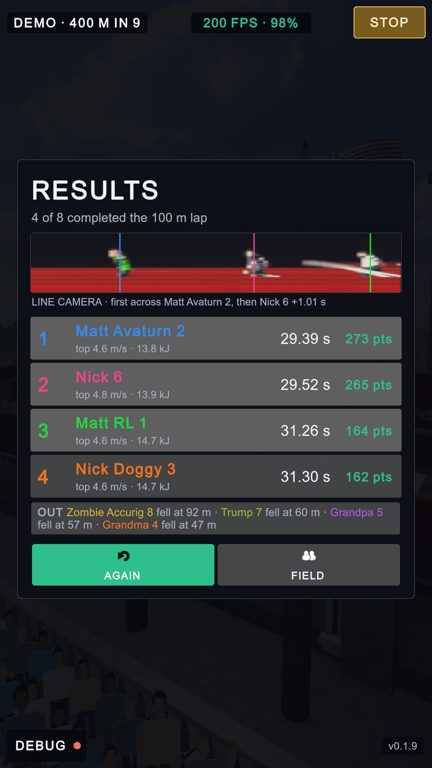

UI/UX flow review and DEMO mode
PoDecath · 30 Sep 2026 · the whole loop (menu → race → results → again / field / menu) driven in the running game and checked at every step, every screen at four phone shapes with a simulated notch, and the kiosk loop the owner asked for.
Shaded red bands: where a notch (141 px) and a home bar (102 px) would be. Dashed red boxes: what was wrong. Green boxes: the same thing after.
Menu on a 20:9 phone with a notch
- The name / frame-rate / MENU bar sat at the very top, under the camera cutout (the shaded band). Now it starts below it.
- DEBUG and the version sat on the home-bar strip at the bottom. Now above it.
- The top-right corner was a greyed-out MENU that did nothing on this screen. It is now DEMO: one tap starts the kiosk loop.
- “SEASON 2/5” did not fit its button (171 px of text in 149 px). Mid-season it now reads “NEXT 2/5”, which is what a tap does.
Before

1
2
3
4
After

1
2
3
A race on a 21:9 phone with a notch
- Same bar, same problem in a race: MENU was under the cutout. It moves below it; the race overlay already sat clear and stays where it was.
- DEBUG moves up off the home bar.
Before

1
2
After

1
2
Results card on a 21:9 phone with a notch (a field of sixteen)
- The card was centred on the whole screen, notch and home bar included, and nothing kept it out from under the MENU and DEBUG bars; with sixteen finishers and the season table it would reach them. It now has its own safe area and sits between the two bars.
- The bars themselves move clear of the notch, as on every screen.
- Left as it was: the layout check flags a long winner's name (“Zombie Accurig 8”, 331 px) running 22 px into the space kept for the personal-best star. It still reads; worth a smaller name font on rows with a star.
Before

1
2
After

1
2
FIELD on the results card, then back to the menu
- FIELD means “change the runners”, but the menu came back reset to one of each (8 runners) and to the 100 M, after a race of sixteen. It now comes back with the field that just ran and the event that was picked.
Before

1
After

1
DEMO (kiosk) mode



Checks run in the game
The loop (flow_check.sh)
- PASS 1 menu up
- PASS 2 race loads, countdown, HUD + overlay up
- PASS 3 first RESTART tap only arms it
- PASS 4 second tap restarts, and counts as an attempt
- PASS 5 finish -> results card, HUD and overlay put away
- PASS 6 nothing restarts behind the card
- PASS 7 AGAIN -> new race, card gone, HUD + overlay back
- PASS 8 second finish shows the card again
- PASS 9 FIELD -> menu
- PASS 10 FIELD keeps the field that just ran (3 runners)
- PASS 11 MENU mid-race -> menu at normal speed
- PASS 12 long jump loads
- PASS 13 long jump -> results
- PASS 14 FIELD from long jump -> menu, event kept
The kiosk loop (demo_check.sh)
- PASS 1 menu: corner says DEMO, demo off
- PASS 2 DEMO -> 100 m with the whole roster, corner says STOP
- PASS 3 100 m finishes on its results card
- PASS 4 400 m loads by itself
- PASS 5 skipped on to HURDLES
- PASS 6 LONG JUMP loads by itself after the hurdles
- PASS 7 after the last event it wraps round to the 100 m
- PASS 8 STOP -> menu, demo off, corner DEMO again, whole roster kept
Before: layout and notch checks (this first version of the notch check skipped the frame's own buttons, so its zeros missed the bars under the notch; the pictures show them)
| Screen | Layout check | Notch problems |
|---|---|---|
| setup 1920 | offscreen 0, scroll 0, tiny-text 0, clipped 1, anchor 0 | 0 |
| setup 2340 | offscreen 0, scroll 0, tiny-text 0, clipped 1, anchor 0 | 0 |
| setup 2400 | offscreen 0, scroll 0, tiny-text 0, clipped 1, anchor 0 | 0 |
| setup 2520 | offscreen 0, scroll 0, tiny-text 0, clipped 1, anchor 0 | 0 |
| race 1920 | offscreen 0, scroll 0, tiny-text 0, clipped 0, anchor 0 | 0 |
| race 2340 | offscreen 0, scroll 0, tiny-text 0, clipped 0, anchor 0 | 0 |
| race 2400 | offscreen 0, scroll 0, tiny-text 0, clipped 0, anchor 0 | 0 |
| race 2520 | offscreen 0, scroll 0, tiny-text 0, clipped 0, anchor 0 | 0 |
| results 1920 | offscreen 0, scroll 0, tiny-text 0, clipped 0, anchor 0 | 0 |
| results 2340 | offscreen 0, scroll 0, tiny-text 0, clipped 0, anchor 0 | 0 |
| results 2400 | offscreen 0, scroll 0, tiny-text 0, clipped 0, anchor 0 | 0 |
| results 2520 | offscreen 0, scroll 0, tiny-text 0, clipped 0, anchor 0 | 0 |
After: layout and notch checks
| Screen | Layout check | Notch problems |
|---|---|---|
| setup 1920 | offscreen 0, scroll 0, tiny-text 0, clipped 0, anchor 0 | 0 |
| setup 2340 | offscreen 0, scroll 0, tiny-text 0, clipped 0, anchor 0 | 0 |
| setup 2400 | offscreen 0, scroll 0, tiny-text 0, clipped 0, anchor 0 | 0 |
| setup 2520 | offscreen 0, scroll 0, tiny-text 0, clipped 0, anchor 0 | 0 |
| race 1920 | offscreen 0, scroll 0, tiny-text 0, clipped 0, anchor 0 | 0 |
| race 2340 | offscreen 0, scroll 0, tiny-text 0, clipped 0, anchor 0 | 0 |
| race 2400 | offscreen 0, scroll 0, tiny-text 0, clipped 0, anchor 0 | 0 |
| race 2520 | offscreen 0, scroll 0, tiny-text 0, clipped 0, anchor 0 | 0 |
| results 1920 | offscreen 0, scroll 0, tiny-text 0, clipped 1, anchor 0 | 0 |
| results 2340 | offscreen 0, scroll 0, tiny-text 0, clipped 1, anchor 0 | 0 |
| results 2400 | offscreen 0, scroll 0, tiny-text 0, clipped 1, anchor 0 | 0 |
| results 2520 | offscreen 0, scroll 0, tiny-text 0, clipped 1, anchor 0 | 0 |
Top 10 UI/UX ideas to do next
Not built. Each one needs an owner decision. Ordered by how much the person holding the phone would notice.
- Give the viewer a stake: “back a runner”. Every athlete is computer-driven, so the game has no moment where the person holding the phone wins or loses. A star on a tile before START; the results card opens with YOU CALLED IT or NOT THIS TIME, and a streak. This is the missing Win/Loss screen.
- A loading card between screens. Every change of screen (START, FIELD, MENU, every demo hand-off) loads a 2-million-triangle scene in one go, so the picture freezes for a few seconds. Load in the background behind a card with the next event's name and a progress bar. On Android a long freeze can also trigger “app not responding”.
- MENU asks twice mid-race, and the phone's Back gesture works. RESTART already says SURE? before throwing a race away; MENU, which throws away more, does not. Back does nothing anywhere today. It should close whatever is open (diagnostics, CHAOS, a flipped tile), then act as MENU, and on the menu ask before leaving.
- Replace the “OUT” paragraph on the results card. In a field of sixteen, fifteen fell (athletes collide), and the card showed one six-line paragraph of names and metres. A grid of the athletes' faces (already rendered for the menu) with “fell at 24 m” under each, and the winner's face and a podium at the top.
- Hide the developer corners in player builds. The frame rate, DEBUG with its coloured dot and the version number sit in the corners of every screen. Keep them in development builds, or behind a long press on the title. The corner button (DEMO / STOP / MENU) stays.
- Running order you can read in a glance. Names are printed in the athlete's colour on a row that flashes green or red when places change, so “Matt RL” can be green text on red. Keep names white, put the colour in a stripe at the edge, and show a gain or loss as an arrow rather than by colour alone.
- Pause when the phone is interrupted. A call or a switch to another app leaves the race running underneath. Pause on the way out and show a RESUME card on the way back. In DEMO mode, resume on its own.
- Kiosk extras for DEMO. Start the demo by itself after a minute with nobody touching the menu (an attract loop); show a small “tap STOP to take over” hint the first time someone touches a kiosk; optionally lock STOP behind a long press so passers-by cannot end it.
- Make the hidden gestures findable. Tapping a name to lock the camera on that runner, tapping the frame-rate chip for stats, the “i” that turns a tile over: none of these is explained anywhere. One short hint each, the first time a race runs, never again.
- The replay behind the results card shows buttons you cannot press. The highlight clip records the whole screen, so the looping replay behind the card shows CHAOS, RESTART and STATS, dimmed but plainly there. Record the camera and the race graphics only.